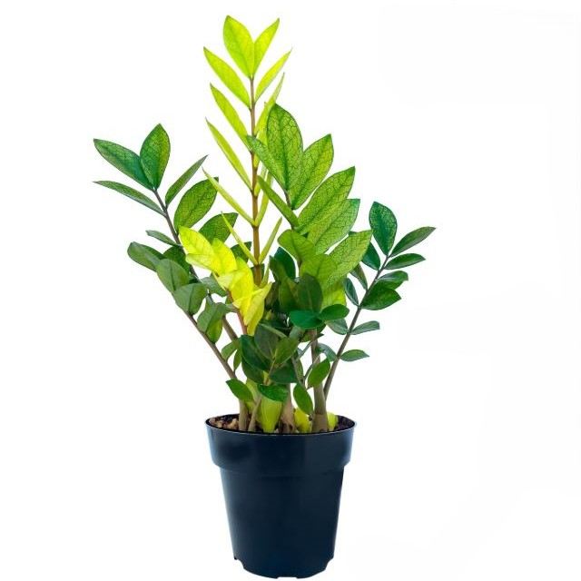
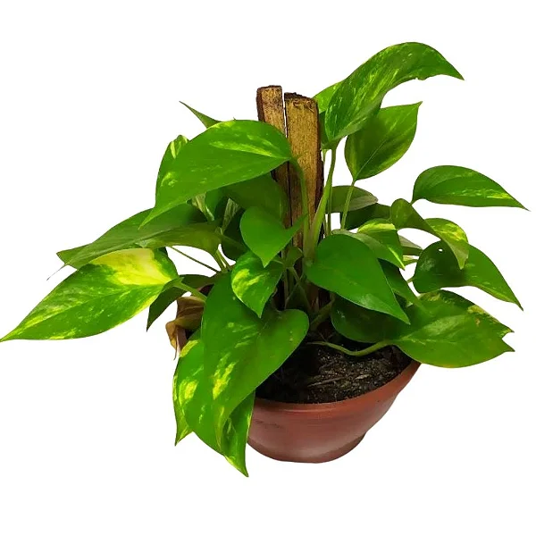
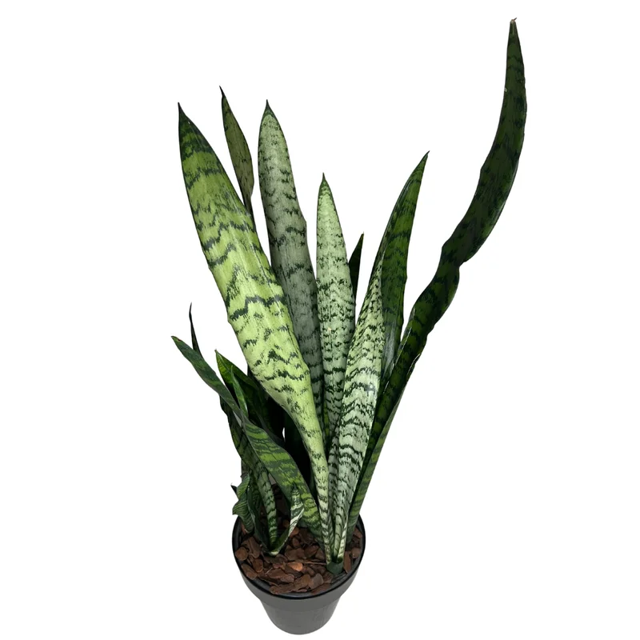
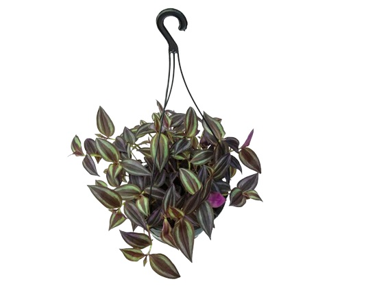

Encontre sua planta ideal
Responda a algumas perguntas rápidas para descobrir qual planta vai amar a sua janela.
Luminosidade na janela?
Espaço disponível?
Recomendações Populares

Zamioculca
A planta guerreira! Ótima para ambientes com pouca luz.

Jiboia
Adapta-se bem à meia-sombra. Crescimento rápido e pendente.

Espada-de-São-Jorge
Extremamente resistente. Tolera baixa luminosidade.

Costela-de-Adão
Folhagem elegante que adora luz indireta e ambientes úmidos.